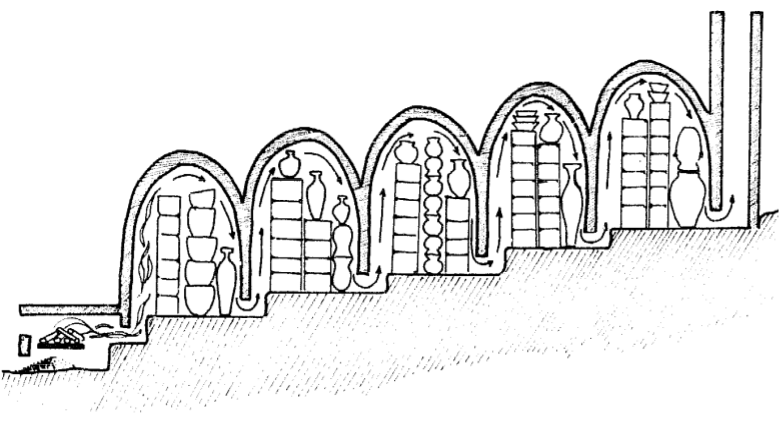
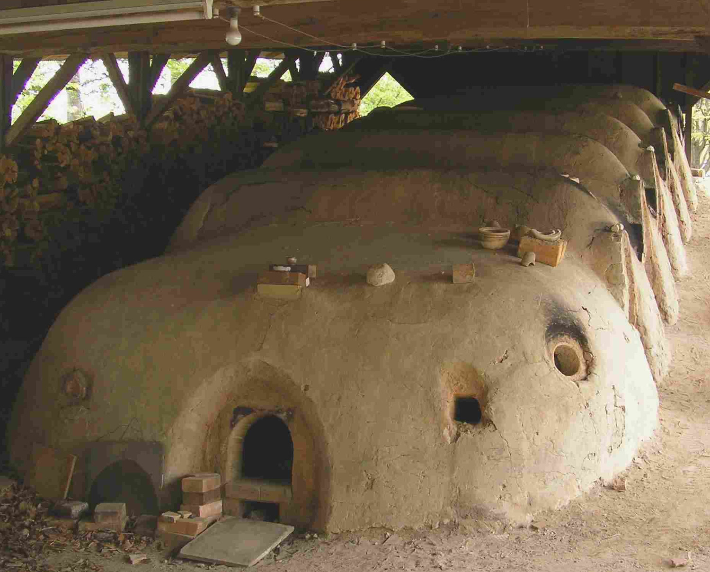
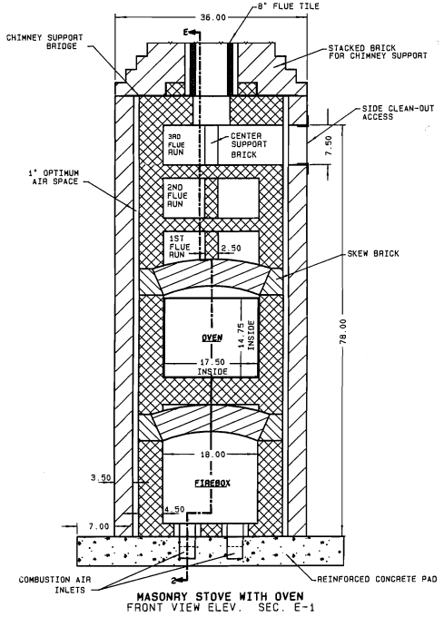
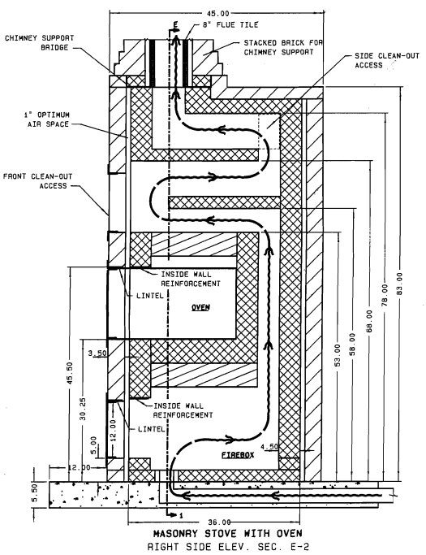
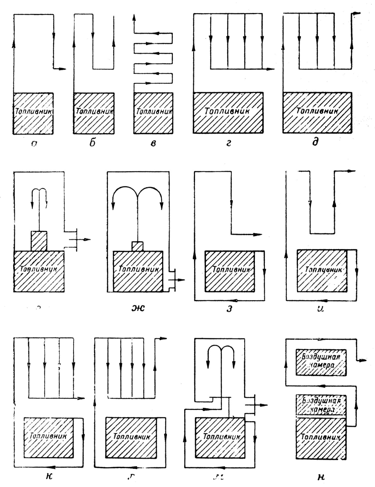
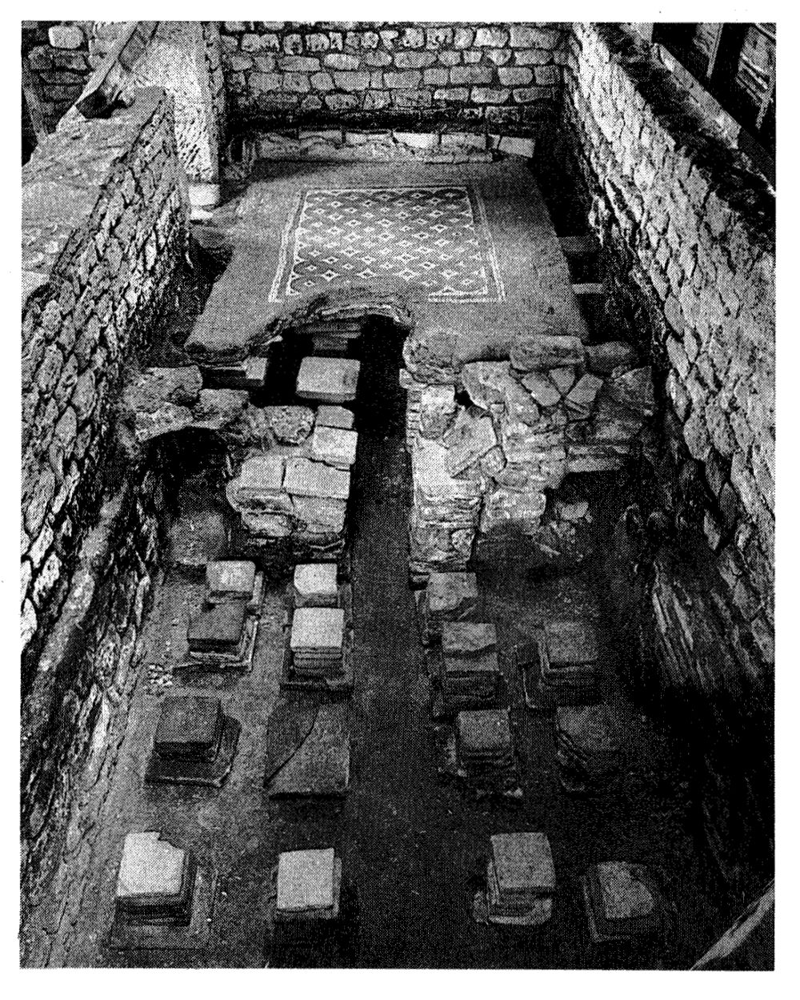

Le principe des cloches et leur utilisation avec les Batchrockets
Plan
Le principe
Il y a environ 3300 ans, sous la dynastie Shang, les chinois inventèrent le "four dragon" basé sur le principe des cloches.
- 
- 
Figures : À gauche, four à briques chinois fonctionnant sous le principe des cloches; à droite, adaptation de ce type de four au Japon Sources : The Self-Reliant Potter: Refractories and Kilns, Henrik Norsker, 1987, p. 58; et https://commons.wikimedia.org/wiki/File:Climbing_kiln_Mashiko.jpg
- 
- 
Source : Missouri Designed Masonry Stove, The Missouri Department Of Natural Resources, 1987, disponible sur ce lien.
- 
- 
Images : À gauche, vue schématique du passage des fumées pour différents types de poêles russes. La partie hachurée correspond au coeur de chauffe. À droite, restes d'un hypocauste romain à Chedworth en Angleterre. Sources : The Book of Masonry Stoves, David Lyle, 1984, p. 97 et 76.
Image : Schémas de poêles en fonte Norvégiens des années 1800. Source : The Book of Masonry Stoves, David Lyle, 1984, p. 53.
Schéma : plan d'un poêle de masse en double cloche, L. A. Semenov, 1950, URSS. Source : The Book of Masonry Stoves, David Lyle, 1984, p. 171.
Le dimensionnement des cloches
sdf
Simple ou double peau ?
zef
Notes
- sd.

{kind=link}